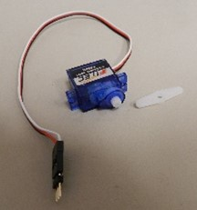
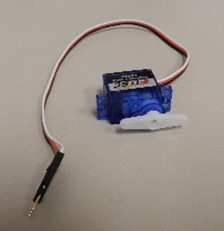
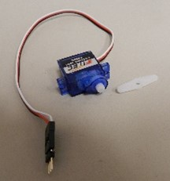
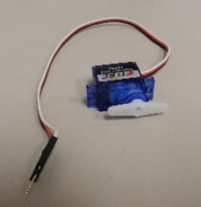

What is a Breadboard?
Prototype boards (commonly called breadboards) are used for
wiring circuits together without soldering. They allow you to rapidly reconfigure
components so you can prototype circuit designs.
If you took the breadboard apart, you would see that each column of holes is connected
by a metal strip. If you connect a wire to one of the holes, anything you plug into
another hole in the same column would be connected to that wire. Note that the gap down the
center
of the board electrically
divides the columns of holes in the top half of the board from those in bottom half.


 


